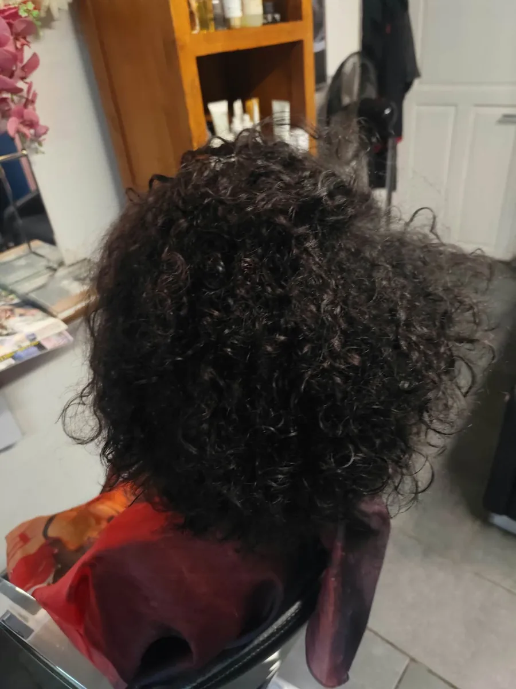
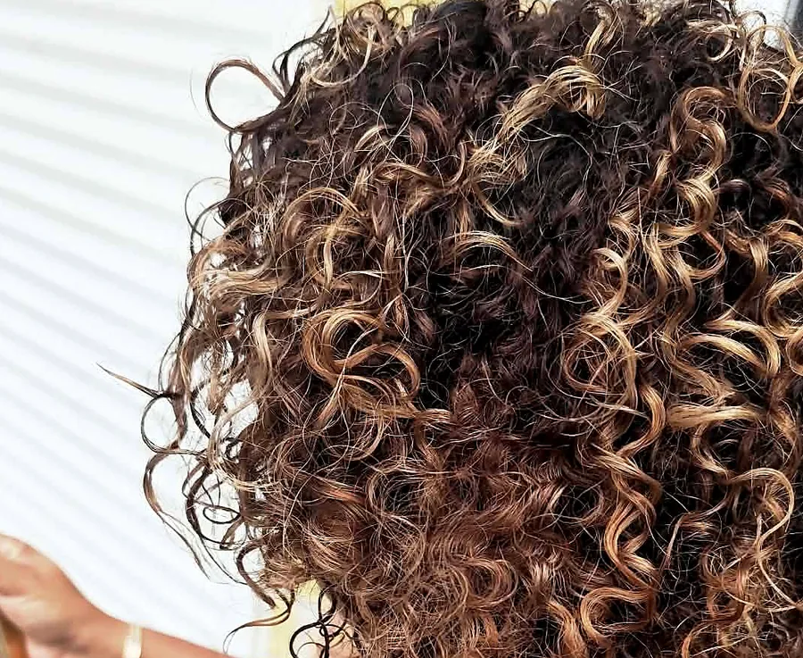
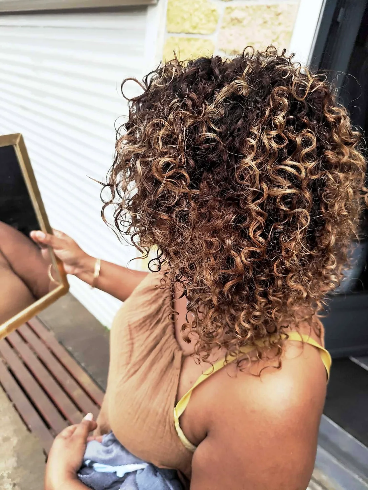
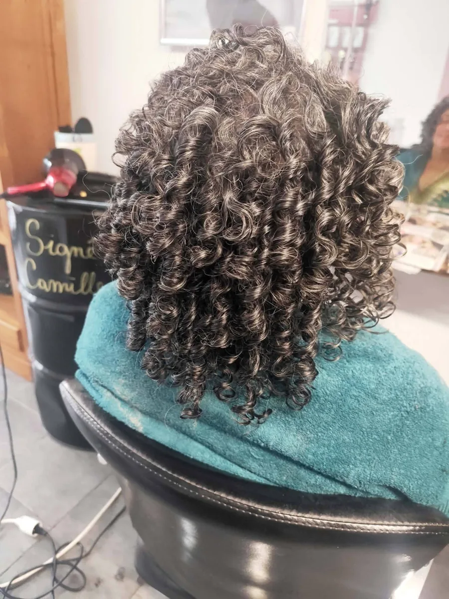
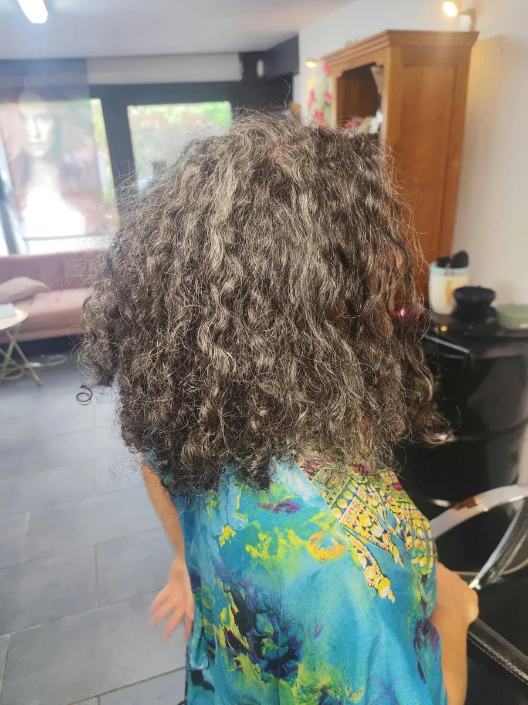
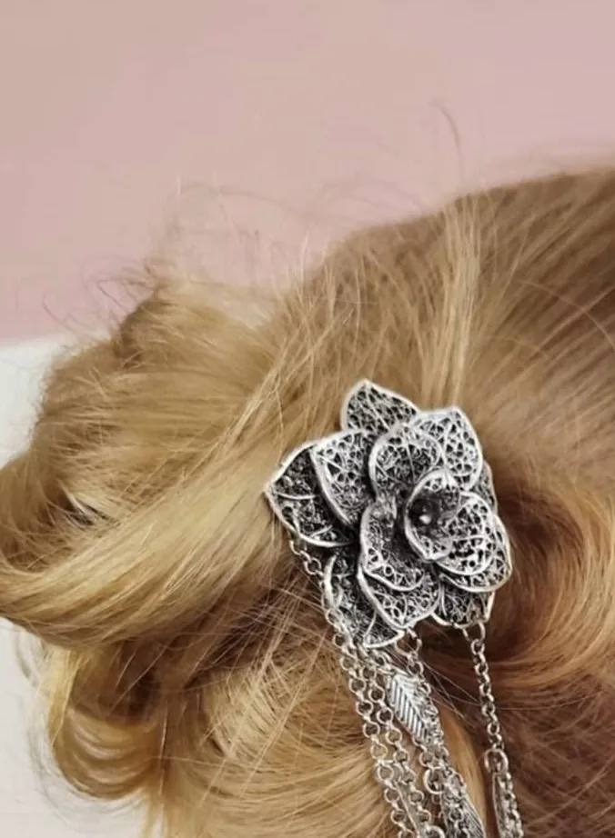
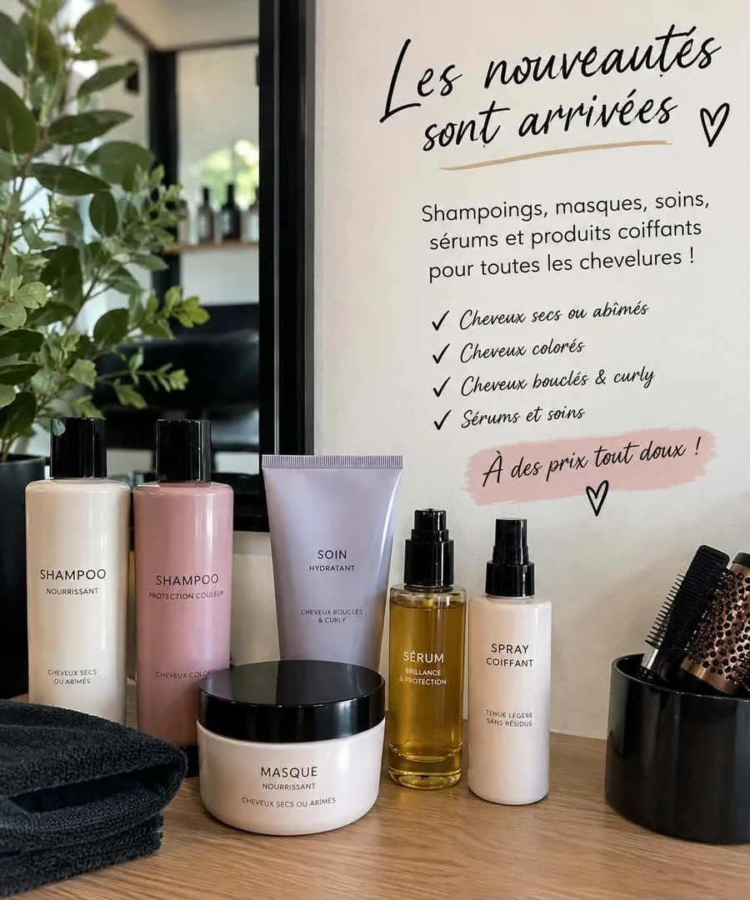

Femmes et hommes, boucles, couleurs et brushings : le salon du 72 chemin Croix Bigat illumine chaque chevelure avec naturel.
Signé Camille accueille femmes et hommes au 72 chemin Croix Bigat. Sur sa page, le salon partage ses réalisations : des boucles généreuses, des reflets miel et caramel, de belles chevelures poivre et sel mises en valeur, des chignons parés pour les grands jours.
Le fil rouge ? Le naturel, tout en douceur : des nuances qui font briller la chevelure et une mise en forme qui tient.

De jolies nuances dorées pour illuminer la chevelure, naturelles et tout en douceur.
Un beau brushing pensé pour durer, souple et lumineux.
Des boucles définies et généreuses, du noir profond au poivre et sel.
Des attaches soignées et des accessoires délicats pour les beaux événements.
De jolies touches de miel pour illuminer la chevelure, naturel tout en douceur et un beau brushing pour une tenue longue durée !— Signé Camille, sur sa page Facebook





Teintes relevées sur les réalisations publiées par le salon · photos Signé Camille

Shampoings, masques, soins, sérums et produits coiffants pour toutes les chevelures :
à des prix tout doux ♥
Une couleur lumineuse, un brushing, un chignon pour les fêtes… Offrez à vos proches un moment de douceur au salon. Écrivez à Signé Camille sur WhatsApp pour préparer ensemble votre carte cadeau.
Offrir une carte cadeau